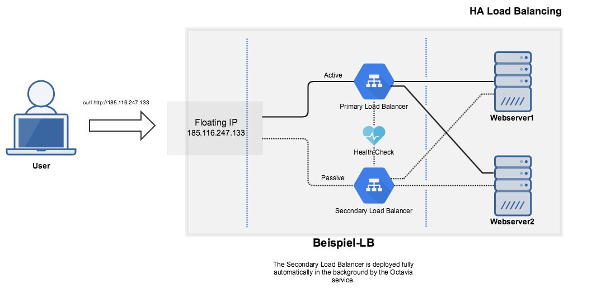

Step 24: The Octavia Loadbalancer
Preface
In the previous steps we learned about some interesting OpenStack features. Next, let’s have a look at the Ocatavia Loadbalancer. Octavia is a highly-available and scalable open source load balancing solution designed to work with OpenStack. Octavia handles load balancing services by managing and configuring a fleet of virtual machines – also known as amphorae – in its project. These amphorae run a HAproxy.
First Steps
To use Octavia, the client first needs to be installed on your system. Instructions for the installation can be found in Step 04 of our guide.
Creating an Octavia-Ladbalancer
In our example we use the example subnet we’ve already created in Step 10.
$ openstack loadbalancer create --name Beispiel-LB --vip-subnet-id 32259126-dd37-44d5-922c-99d68ee870cd
+---------------------+--------------------------------------+
| Field | Value |
+---------------------+--------------------------------------+
| admin_state_up | True |
| created_at | 2019-05-01T09:00:00 |
| description | |
| flavor_id | |
| id | e94827f0-f94d-40c7-a7fd-b91bf2676177 |
| listeners | |
| name | Beispiel-LB |
| operating_status | OFFLINE |
| pools | |
| project_id | b15cde70d85749689e08106f973bb002 |
| provider | amphora |
| provisioning_status | PENDING_CREATE |
| updated_at | None |
| vip_address | 10.0.0.10 |
| vip_network_id | f2a8f00e-204b-4c37-9d19-1d5c8e4efbf6 |
| vip_port_id | 37fc5b34-ee07-49c8-b054-a8d591a9679f |
| vip_qos_policy_id | None |
| vip_subnet_id | 32259126-dd37-44d5-922c-99d68ee870cd |
+---------------------+--------------------------------------+
Now Octavia spawns amphorae instances in the background.
$ openstack loadbalancer list
+--------------------------------------+-------------+----------------------------------+--------------+---------------------+----------+
| id | name | project_id | vip_address | provisioning_status | provider |
+--------------------------------------+-------------+----------------------------------+--------------+---------------------+----------+
| e94827f0-f94d-40c7-a7fd-b91bf2676177 | Beispiel-LB | b15cde70d85749689e08106f973bb002 | 10.0.0.10 | PENDING_CREATE | amphora |
+--------------------------------------+-------------+----------------------------------+--------------+---------------------+----------+
Once the provisioning_status is ACTIVE, the process has completed successfully and the Octavia load balancer can be further configured.
$ openstack loadbalancer list
+--------------------------------------+-------------+----------------------------------+--------------+---------------------+----------+
| id | name | project_id | vip_address | provisioning_status | provider |
+--------------------------------------+-------------+----------------------------------+--------------+---------------------+----------+
| e94827f0-f94d-40c7-a7fd-b91bf2676177 | Beispiel-LB | b15cde70d85749689e08106f973bb002 | 10.0.0.10 | ACTIVE | amphora |
+--------------------------------------+-------------+----------------------------------+--------------+---------------------+----------+
Create LB listener
In our example, we want to create a listener for HTTP on port 80. A listener here - as in other LB solutions - refers to the port of the front end.
$ openstack loadbalancer listener create --name Beispiel-listener --protocol HTTP --protocol-port 80 Beispiel-LB
+-----------------------------+--------------------------------------+
| Field | Value |
+-----------------------------+--------------------------------------+
| admin_state_up | True |
| connection_limit | -1 |
| created_at | 2019-05-01T09:00:00 |
| default_pool_id | None |
| default_tls_container_ref | None |
| description | |
| id | 0a3312d1-8cf7-41a8-8d24-181246468cd7 |
| insert_headers | None |
| l7policies | |
| loadbalancers | e94827f0-f94d-40c7-a7fd-b91bf2676177 |
| name | Beispiel-listener |
| operating_status | OFFLINE |
| project_id | b15cde70d85749689e08106f973bb002 |
| protocol | HTTP |
| protocol_port | 80 |
| provisioning_status | PENDING_CREATE |
| sni_container_refs | [] |
| timeout_client_data | 50000 |
| timeout_member_connect | 5000 |
| timeout_member_data | 50000 |
| timeout_tcp_inspect | 0 |
| updated_at | None |
| client_ca_tls_container_ref | |
| client_authentication | |
| client_crl_container_ref | |
+-----------------------------+--------------------------------------+
Once the admin_state_up is true the loadbalancer has been successfully created. The Octavia loadbalancer can be further configured at this point.
$ openstack loadbalancer listener list
+--------------------------------------+-----------------+-------------------+----------------------------------+----------+---------------+----------------+
| id | default_pool_id | name | project_id | protocol | protocol_port | admin_state_up |
+--------------------------------------+-----------------+-------------------+----------------------------------+----------+---------------+----------------+
| 0a3312d1-8cf7-41a8-8d24-181246468cd7 | None | Beispiel-listener | b15cde70d85749689e08106f973bb002 | HTTP | 80 | True |
+--------------------------------------+-----------------+-------------------+----------------------------------+----------+---------------+----------------+
Create LB pool
The LB-pool here refers to a collection of all objects (listeners, members, etc.) - comparable to a pool of public IP addresses from which one can be assigned. A pool for our example is created as follows:
$ openstack loadbalancer pool create --name Beispiel-pool --lb-algorithm ROUND_ROBIN --listener Beispiel-listener --protocol HTTP
+----------------------+--------------------------------------+
| Field | Value |
+----------------------+--------------------------------------+
| admin_state_up | True |
| created_at | 2019-05-01T09:00:00 |
| description | |
| healthmonitor_id | |
| id | 4053e88e-c2b5-47c6-987e-4387d837c88d |
| lb_algorithm | ROUND_ROBIN |
| listeners | 0a3312d1-8cf7-41a8-8d24-181246468cd7 |
| loadbalancers | e94827f0-f94d-40c7-a7fd-b91bf2676177 |
| members | |
| name | Beispiel-pool |
| operating_status | OFFLINE |
| project_id | b15cde70d85749689e08106f973bb002 |
| protocol | HTTP |
| provisioning_status | PENDING_CREATE |
| session_persistence | None |
| updated_at | None |
| tls_container_ref | |
| ca_tls_container_ref | |
| crl_container_ref | |
| tls_enabled | |
+----------------------+--------------------------------------+
It should be noted that with openstack loadbalancer pool create --help all possible settings can be displayed. The most common settings and their choices:
--protocol: {TCP,HTTP,HTTPS,TERMINATED_HTTPS,PROXY,UDP}
--lb-algorithm {SOURCE_IP,ROUND_ROBIN,LEAST_CONNECTIONS}
The pool has been successfully created when the provisioning_status has reached the status ACTIVE.
$ openstack loadbalancer pool list
+--------------------------------------+---------------+----------------------------------+---------------------+----------+--------------+----------------+
| id | name | project_id | provisioning_status | protocol | lb_algorithm | admin_state_up |
+--------------------------------------+---------------+----------------------------------+---------------------+----------+--------------+----------------+
| 4053e88e-c2b5-47c6-987e-4387d837c88d | Beispiel-pool | b15cde70d85749689e08106f973bb002 | ACTIVE | HTTP | ROUND_ROBIN | True |
+--------------------------------------+---------------+----------------------------------+---------------------+----------+--------------+----------------+
Create the LB member
For our loadbalancer to know which backends it is allowed to forward to, we still need a member, which we define as follows:
$ openstack loadbalancer member create --subnet-id 32259126-dd37-44d5-922c-99d68ee870cd --address 10.0.0.11 --protocol-port 80 Beispiel-pool
+---------------------+--------------------------------------+
| Field | Value |
+---------------------+--------------------------------------+
| address | 10.0.0.11 |
| admin_state_up | True |
| created_at | 2019-05-01T09:00:00 |
| id | 703e27e0-e7fe-474b-b32d-68f9a8aeef07 |
| name | |
| operating_status | NO_MONITOR |
| project_id | b15cde70d85749689e08106f973bb002 |
| protocol_port | 80 |
| provisioning_status | PENDING_CREATE |
| subnet_id | 32259126-dd37-44d5-922c-99d68ee870cd |
| updated_at | None |
| weight | 1 |
| monitor_port | None |
| monitor_address | None |
| backup | False |
+---------------------+--------------------------------------+
and
$ openstack loadbalancer member create --subnet-id 32259126-dd37-44d5-922c-99d68ee870cd --address 10.0.0.12 --protocol-port 80 Beispiel-pool
+---------------------+--------------------------------------+
| Field | Value |
+---------------------+--------------------------------------+
| address | 10.0.0.12 |
| admin_state_up | True |
| created_at | 2019-05-01T09:00:00 |
| id | 2add1e17-73a6-4002-82af-538a3374e5dc |
| name | |
| operating_status | NO_MONITOR |
| project_id | b15cde70d85749689e08106f973bb002 |
| protocol_port | 80 |
| provisioning_status | PENDING_CREATE |
| subnet_id | 32259126-dd37-44d5-922c-99d68ee870cd |
| updated_at | None |
| weight | 1 |
| monitor_port | None |
| monitor_address | None |
| backup | False |
+---------------------+--------------------------------------+
It should be noted here that the two IP’s from 10.0.0. * already exist, listening on port 80 (web server), and deliver a simple website with the information about their service name. Assuming these web servers in the following example are Ubuntu/Debian and you have root permissions, you could quickly create a simple web page with:
root@BeispielInstanz1:~# apt-get update; apt-get -y install apache2; echo "you hit: you hit: webserver1" > /var/www/html/index.html
root@BeispielInstanz2:~# apt-get update; apt-get -y install apache2; echo "you hit: you hit: webserver2" > /var/www/html/index.html
We can check the status of created members as follows:
$ openstack loadbalancer member list Beispiel-pool
+--------------------------------------+------+----------------------------------+---------------------+--------------+---------------+------------------+--------+
| id | name | project_id | provisioning_status | address | protocol_port | operating_status | weight |
+--------------------------------------+------+----------------------------------+---------------------+--------------+---------------+------------------+--------+
| 703e27e0-e7fe-474b-b32d-68f9a8aeef07 | | b15cde70d85749689e08106f973bb002 | ACTIVE | 10.0.0.11 | 80 | NO_MONITOR | 1 |
| 2add1e17-73a6-4002-82af-538a3374e5dc | | b15cde70d85749689e08106f973bb002 | ACTIVE | 10.0.0.12 | 80 | NO_MONITOR | 1 |
+--------------------------------------+------+----------------------------------+---------------------+--------------+---------------+------------------+--------+
Now the “internal” construct of the loadbalancer is configured.
We now have:
- 2
members who provide the actual service via port 80 and between which the loadbalancing takes place, - a
poolfor thismember, - a
listenerwhich listens on port TCP/80 and makes aROUND_ROBINto the two endpoints and - a loadbalancer, which we used to combine all components.
The operating_status NO_MONITOR is corrected under healthmonitor.
Create and configure the floating IP
In order to be able to use the loadbalancer outside of our example network, we must reserve a floating IP and then link it to the vip_port_id of the example LB.
Using the following command we can create a Floating IP from the provider network:
$ openstack floating ip create provider
+---------------------+----------------------------------------------------------------------------------------------------------------------------------------------------------------------------------------------------------+
| Field | Value |
+---------------------+----------------------------------------------------------------------------------------------------------------------------------------------------------------------------------------------------------+
| created_at | 2019-05-01T09:00:00Z |
| description | |
| dns_domain | None |
| dns_name | None |
| fixed_ip_address | None |
| floating_ip_address | 185.116.247.133 |
| floating_network_id | 54258498-a513-47da-9369-1a644e4be692 |
| id | 46c0e8cf-783d-44a0-8256-79f8ae0be7fe |
| location | Munch({'project': Munch({'domain_id': 'default', 'id': u'b15cde70d85749689e08106f973bb002', 'name': 'beispiel-tenant', 'domain_name': None}), 'cloud': '', 'region_name': 'fra', 'zone': None}) |
| name | 185.116.247.133 |
| port_details | None |
| port_id | None |
| project_id | b15cde70d85749689e08106f973bb002 |
| qos_policy_id | None |
| revision_number | 0 |
| router_id | None |
| status | DOWN |
| subnet_id | None |
| tags | [] |
| updated_at | 2019-05-01T09:00:00Z |
+---------------------+----------------------------------------------------------------------------------------------------------------------------------------------------------------------------------------------------------+
In the next step we need the vip_port_id of the loadbalancer. Accomplished with the following command:
$ openstack loadbalancer show Beispiel-LB -f value -c vip_port_id
37fc5b34-ee07-49c8-b054-a8d591a9679f
With the following command we can now assign the public IP address to the loadbalancer. The LB (and thus also the endpoints behind it) can now be reached from the Internet.
openstack floating ip set --port 37fc5b34-ee07-49c8-b054-a8d591a9679f 185.116.247.133
We are now ready to test our loadbalancer deployment. With the following command we query our loadbalancer via port TCP/80 and then get a corresponding response from the single member:
$ for ((i=1;i<=10;i++)); do curl http://185.116.247.133; sleep 1; done
you hit: webserver1
you hit: webserver2
you hit: webserver1
you hit: webserver2
you hit: webserver1
you hit: webserver2
you hit: webserver1
... (usw.)
Create a healthmonitor
With the following command we create a monitor that, in the event of a failure of one of the backends, can remove a faulty backend from the load distribution, thus allowing the website or application to continue to be delivered cleanly.
$ openstack loadbalancer healthmonitor create --delay 5 --max-retries 2 --timeout 10 --type HTTP --name Beispielmonitor --url-path / Beispiel-pool
+---------------------+--------------------------------------+
| Field | Value |
+---------------------+--------------------------------------+
| project_id | b15cde70d85749689e08106f973bb002 |
| name | Beispielmonitor |
| admin_state_up | True |
| pools | 4053e88e-c2b5-47c6-987e-4387d837c88d |
| created_at | 2019-05-01T09:00:00 |
| provisioning_status | PENDING_CREATE |
| updated_at | None |
| delay | 5 |
| expected_codes | 200 |
| max_retries | 2 |
| http_method | GET |
| timeout | 10 |
| max_retries_down | 3 |
| url_path | / |
| type | HTTP |
| id | 368f9baa-708c-4e7f-ace1-02de15598c5d |
| operating_status | OFFLINE |
| http_version | |
| domain_name | |
+---------------------+--------------------------------------+
In this example, the monitor removes the failing backend from the pool if the integrity check (–type HTTP, –url-path / ) fails every two five-second intervals(–delay 5, –max-retries 2, –timeout 10).
Once the server is restored and responds to TCP/80 again, it will be added back to the pool.
A manual failover can be enforced if status code of the web server is not equal to “200” or in the event that there is no response from the web server at all.
$ openstack loadbalancer healthmonitor show Beispielmonitor
+---------------------+--------------------------------------+
| Field | Value |
+---------------------+--------------------------------------+
| project_id | b15cde70d85749689e08106f973bb002 |
| name | Beispielmonitor |
| admin_state_up | True |
| pools | 4053e88e-c2b5-47c6-987e-4387d837c88d |
| created_at | 2019-05-01T09:00:00 |
| provisioning_status | ACTIVE |
| updated_at | 2019-05-01T09:00:00 |
| delay | 5 |
| expected_codes | 200 |
| max_retries | 2 |
| http_method | GET |
| timeout | 10 |
| max_retries_down | 3 |
| url_path | / |
| type | HTTP |
| id | 368f9baa-708c-4e7f-ace1-02de15598c5d |
| operating_status | ONLINE |
| http_version | |
| domain_name | |
+---------------------+--------------------------------------+
From our deployment example, the result should look something like this:
you hit: webserver1
Mi 22 Mai 2019 17:09:39 CEST
you hit: webserver2
Mi 22 Mai 2019 17:09:40 CEST
you hit: webserver1
Mi 22 Mai 2019 17:09:41 CEST
you hit: webserver2
Mi 22 Mai 2019 17:09:42 CEST
you hit: webserver1
Mi 22 Mai 2019 17:09:43 CEST - up to now both webservers were online, but now the webserver2 went offline.
you hit: webserver1
Mi 22 Mai 2019 17:09:44 CEST - still expected hit by ROUND_ROBIN
you hit: webserver1
Mi 22 Mai 2019 17:09:50 CEST - first retry to webserver2 fails
you hit: webserver1
Mi 22 Mai 2019 17:09:56 CEST - second retry to webserver2 fails
you hit: webserver1
Mi 22 Mai 2019 17:10:01 CEST - the backend (webserver2) was taken out of the pool.
you hit: webserver1
Mi 22 Mai 2019 17:10:02 CEST
you hit: webserver1
Mi 22 Mai 2019 17:10:03 CEST
you hit: webserver1
Mi 22 Mai 2019 17:10:04 CEST
you hit: webserver1
Mi 22 Mai 2019 17:10:05 CEST
you hit: webserver1
Mi 22 Mai 2019 17:10:06 CEST
Known Issues
If you get the following error when assigning the public IP address to the loadbalancer:
ResourceNotFound: 404: Client Error for url: https://network.fra.optimist.innovo.cloud/v2.0/floatingips/46c0e8cf-783d-44a0-8256-79f8ae0be7fe, External network 54258498-a513-47da-9369-1a644e4be692 is not reachable from subnet 32259126-dd37-44d5-922c-99d68ee870cd. Therefore, cannot associate Port 37fc5b34-ee07-49c8-b054-a8d591a9679f with a Floating IP.
Then a connection between its example network (router) and the provider network is missing Step 10
The default connect settings of the haproxy processes within an amphora is 50 seconds. If a connection lasts longer than 50 seconds, you must configure these values on the listener.
An example of a connect with timeout:
$ time kubectl -n kube-system exec -ti machine-controller-5f649c5ff4-pksps /bin/sh
~ $
50.69 real 0.08 user 0.05 sys
An example extending the timeout to 4h:
openstack loadbalancer listener set --timeout_client_data 14400000 <Listener ID>
openstack loadbalancer listener set --timeout_member_data 14400000 <Listener ID>
If Octavia tries to start a LB in a network with port_security_enabled = False, the LB will end up in an ERROR state.
Conclusion
It always makes sense to establish a monitor for your pool. 